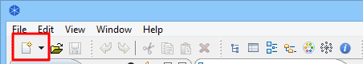
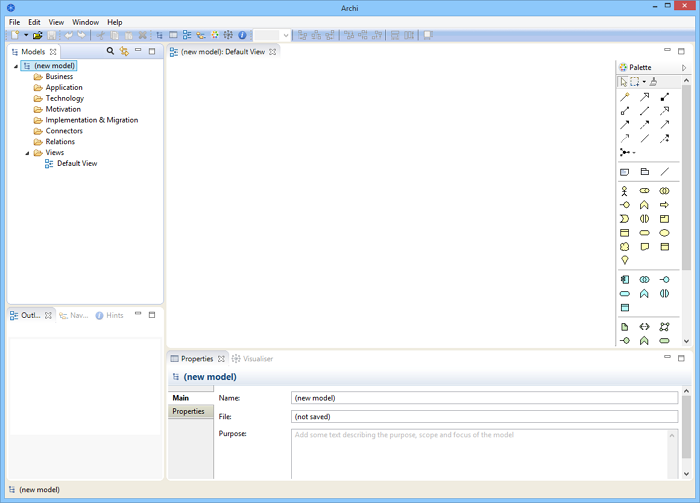

To create a new, blank ArchiMate model in Archi do the following:
Select "Empty Model" from the main "File->New" menu or from the button on the main toolbar:
The "New" button
A model entitled "(new model)" will be created and visible in the Models Tree window with the "Default View" open with a blank drawing canvas and palette:
The default Archi workspace with a new model created
Note that the model is named by default "(new model)". You may change this by renaming it directly in the Model Tree or selecting it in the Model Tree and editing the name in the Properties Window. You may also add a "Purpose" here in the Properties Window describing the purpose and aims of the model.
Note also that one "View" has automatically been created for the model and named "Default View" and is placed in the "Views" folder in the Model Tree. If the View is not open (i.e. visible with blank drawing canvas and palette) you can open it by double-clicking on it in the Model Tree. Doing so will open the View (diagram) editor to the right. If you wish to rename the View, simply select it on the Model Tree and edit the name in the Properties Window.
The Models window can display more than one Model Tree which means that you can work on more than one model at the same time.
The asterisk that appears on a model in the Tree when changes have been made indicates that this model was changed, but that the changes have not yet been saved.